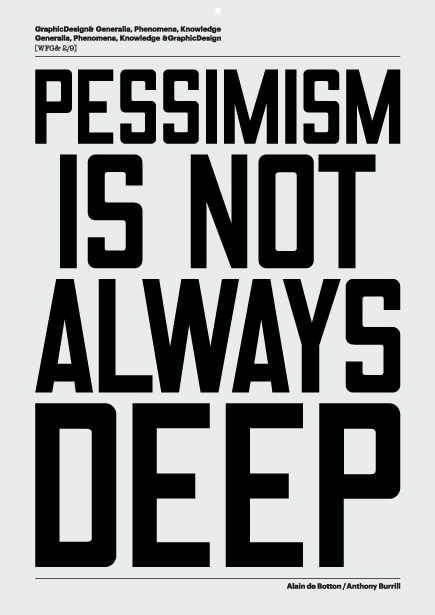

Eumir Deodato - Also Sprach Zarathustra (1972)
альбом просто отличный :)
альбом просто отличный :)
Не альбомная версия. 5 минут против чуть больше 2 в альбоме.
Какая отличная тема на французском :)
Небольшое видео о том, как делали. Жаль, к нам не приедет, обязательно сходил бы!


Клевые плакатики :)
Чуваки заделали отличное видео. А еще у него вышел новый альбом, про который еще даже discogs.com ничего не знает, а я уже слушаю :)

Отличный альбом!